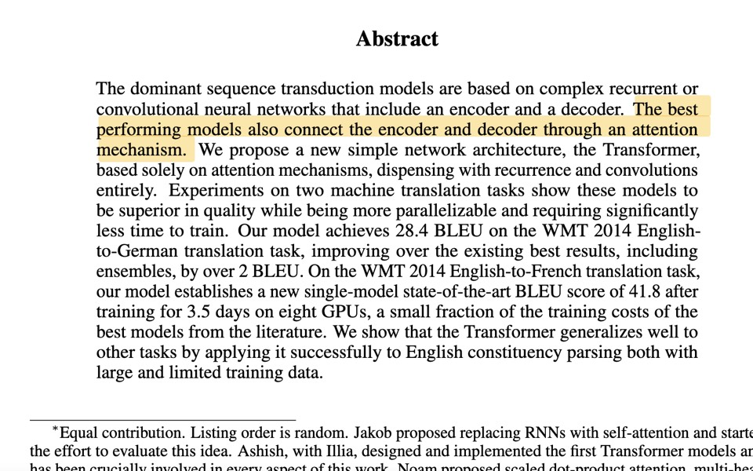

Nº08 · Personal tool · Oct 2026个人工具 · 2026 年 10 月Local speech synthesis · Obsidian · GPU home server本地语音合成 · Obsidian · 家用 GPU 服务器
Bilingual Note Reader
My notes and papers mix Chinese and English. This reads them aloud in Obsidian, switching to a native voice for each language mid-sentence and highlighting the exact sentence being read, on the PDF page itself, all on my own hardware.我的笔记和论文中英混杂。它在 Obsidian 里把它们读出来，句子中途按语言切换成母语声音，并在 PDF 页面上高亮正在读的那一句，全部跑在自己的机器上。

01Problem问题
Reading a paper like the Transformer paper means long, mixed-language notes. A single-voice reader either mangles the Chinese or mangles the English, cloud speech APIs charge per character and send private notes off the machine, and without a pointer it is easy to lose your place.读 Transformer 这类论文，笔记又长又中英混写。只有一个声音的朗读器，不是读坏中文就是读坏英文；云端语音 API 按字收费，还要把私人笔记发出去；没有跟读指示，听着听着就找不到读到哪了。
02How it works原理
- Neural speech models are trained per language, so mixed text has to be split before synthesis, not after.神经语音模型按语言训练，所以混合文本要在合成之前切开，而不是之后。
- Split by script: a run of Han characters is Chinese, Latin letters are English. A Chinese sentence goes to its model whole, never cut at commas, so the intonation stays continuous; English words inside it get the English voice.按文字系统切分：连续汉字是中文，拉丁字母是英文。中文句子整句交给模型，不在逗号处切，语调连贯；句中夹的英文词交给英文声音。
- Pauses are built, not guessed: each clip's own leading and trailing silence is trimmed, then an exact gap is inserted (10 ms at sentence and line ends, 500 ms at an English comma), so timing is deterministic.停顿是拼出来的，不靠模型猜：先裁掉每段自带的首尾静音，再插入精确的间隔（句末和换行 10 毫秒，英文逗号 500 毫秒），节奏可预测。
- Gapless playback: the plugin synthesizes the next three chunks while one plays. Every line synthesizes faster than real time, so after the first line there is no waiting.无缝播放：一段在播时，插件预先合成后面三段。每一行的合成都快于实时，所以第一行之后不再等待。
- A PDF is read from the viewer's own text layer: text items become sentences, and each sentence keeps the exact span of characters it came from, so the highlight lands on the words being spoken, across lines and pages.PDF 从阅读器自己的文字层读取：文字块被拼成句子，每句都记住它来自哪一段字符，所以高亮正好落在正在读的字上，可以跨行、跨页。
03What I built我做了什么
- A proxy that speaks the OpenAI-compatible
/v1/audio/speechAPI, so the plugin switches engines without a code change; standard-library Python in a 1-CPU, 512 MB container.一个兼容 OpenAI/v1/audio/speech接口的代理，插件不改代码就能换引擎；纯标准库 Python，跑在 1 核 CPU、512 MB 的容器里。 - Routing: Chinese to Qwen3-TTS 1.7B on the GPU, English to Kokoro-82M on the CPU. If the Chinese model is down, Chinese falls back to Kokoro's Chinese voice.分流：中文给 GPU 上的 Qwen3-TTS 1.7B，英文给 CPU 上的 Kokoro-82M。中文模型挂了时，中文自动退回 Kokoro 的中文声音。
- Chinese clips are normalized to the English voice's loudness, so the switch does not jump in volume.中文片段的响度对齐到英文声音，切换时音量不跳。
- A failed piece is retried once, then replaced by silence, so one bad sentence never stops a long note. Recently read sentences sit in a 120 MB in-memory cache.某段合成失败就重试一次，再失败用静音顶上，长笔记不会因为一句出错而中断。最近读过的句子放在 120 MB 的内存缓存里。
- Plugin patch: one line per chunk, generated navigation blocks skipped, the line being read highlighted and scrolled to the middle of the screen, and reading resumes where it stopped.插件补丁：一行一段，跳过自动生成的导航块，正在读的行高亮并滚到屏幕中间，下次从停下的地方继续。
- PDF mode, modelled on commercial readers: skips running headers, page numbers, footnotes, citations like [12], captions, tables, figure labels and the references; joins words hyphenated across lines; reads a numbered equation as “Equation 1”; Alt+click a sentence to read from there.PDF 模式，参照商业朗读软件的做法：跳过页眉页脚、页码、脚注、[12] 这类引用、图表标题、表格、图中标签和参考文献；把跨行断开的单词接回去；带编号的公式读作「Equation 1」；按住 Alt 点一句，就从那句开始读。
- The highlight is drawn under the PDF's text layer and blended like a highlight annotation, so the text stays sharp and the box stays in place when zooming.高亮画在 PDF 文字层下面，像高亮批注一样混合，文字保持清晰，缩放时位置不变。
- Model servers are reachable only inside a Docker network or the private network; no note text is logged.模型服务只能在 Docker 内部网络或私有网络里访问；不记录任何笔记文字。
04Architecture架构
05Listen听一段
06Measured测量结果
33.9 s / 23.2 s
of bilingual audio from the Transformer abstract, synthesized cold; every line faster than real timeTransformer 摘要的中英混读音频 / 冷启动合成用时；每一行都快于实时
src · timing run, 2026-10-15 (private)
0.07 s
to re-read a cached line重读已缓存的一行所需时间
src · timing run, 2026-10-15 (private)
254
sentences read from the 15-page Transformer PDF, each highlighted on its page; references, tables and captions skipped句：从 15 页的 Transformer PDF 读出的句子数，每句都在页面上高亮；参考文献、表格和图表标题被跳过
src · Obsidian run, 2026-10-15 (private)
98%+
of read lines matched to their source line for the follow-along highlight, across 4 notes的朗读行能对上原文，用于跟读高亮（4 篇笔记）
src · highlight test, 2026-10-13 (private)
0
paid API calls; everything runs on my own hardware次付费 API 调用；全部在自己的机器上运行
src · deployment config (private)
07Limits, stated plainly局限，直说
- A personal tool on a home server over a private network, not a hosted service.个人工具，跑在家用服务器上、只在私有网络内，不是托管服务。
- The split is by script, so Japanese kanji would be read as Chinese and pinyin as English.按文字系统切分，所以日文汉字会被当中文读，拼音会被当英文读。
- The highlight is per sentence; commercial readers also highlight each word.高亮到句子为止；商业软件还会逐词高亮。
- PDF cleanup is tuned on single-column papers; two-column layouts and unnumbered formulas are only partly handled, and scanned PDFs have no text to read.PDF 清理规则按单栏论文调的；双栏排版和没有编号的公式只处理了一部分，扫描版 PDF 没有文字可读。
- The first sentence waits about 4 s on a cold start, and the plugin patch has to be re-applied after an upstream update.冷启动时第一句要等约 4 秒；上游插件升级后要重新打补丁。
08Next下一步
- Word-level highlighting: Kokoro can return a timestamp for every word; Chinese timing from Qwen3-ForcedAligner.逐词高亮：Kokoro 能给出每个词的时间戳；中文用 Qwen3-ForcedAligner 对齐时间。
- Reading order for two-column papers, and spoken formulas instead of skipping them.双栏论文的阅读顺序，以及把公式读出来而不是跳过。
- Record the follow-along on the Transformer paper as a short video.把在 Transformer 论文上的跟读录成短视频。
- Publish the proxy and the PDF reader as a repository with a one-command Docker Compose setup.把代理和 PDF 朗读开源成仓库，一条 Docker Compose 命令就能部署。